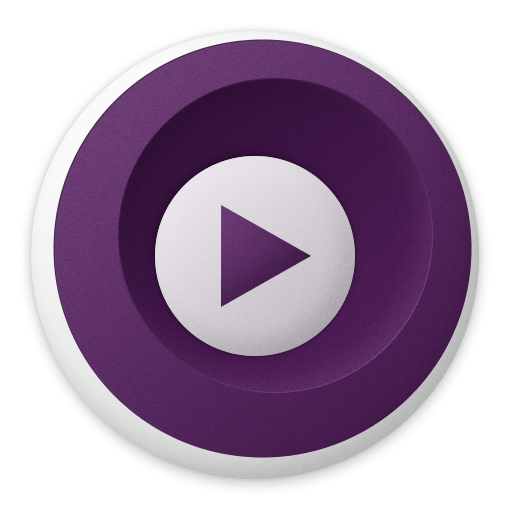

Hoy os traigo una chuleta de atajos de teclado del reproductor mpv.

+-----------------------------------+-----------------------------------+
| p | Modo de pausa / reproducción |
+-----------------------------------+-----------------------------------+
| f | Alternar pantalla completa |
+-----------------------------------+-----------------------------------+
| m | Silenciar / reactivar audio |
+-----------------------------------+-----------------------------------+
| v | Visibilidad de subtítulos |
+-----------------------------------+-----------------------------------+
| s | Tomar una captura de pantalla |
+-----------------------------------+-----------------------------------+
| S | Toma una captura de pantalla sin |
| | subtítulos |
+-----------------------------------+-----------------------------------+
| Q | Deja de guardar la posición |
| | actual para mirar más tarde |
+-----------------------------------+-----------------------------------+
| o | Mostrar progreso |
+-----------------------------------+-----------------------------------+
| O | Alternar mostrar progreso |
+-----------------------------------+-----------------------------------+
| T | Alternar la ventana de video en |
| | la parte superior |
+-----------------------------------+-----------------------------------+
+-----------------------------------+-----------------------------------+
| PGUP / PGDWN | Capítulo anterior / siguiente |
+-----------------------------------+-----------------------------------+
| . / , | Cuadro siguiente / anterior |
+-----------------------------------+-----------------------------------+
| DERECHA IZQUIERDA | Busca 5 segundos |
+-----------------------------------+-----------------------------------+
| ARRIBA ABAJO | Busca 60 segundos |
+-----------------------------------+-----------------------------------+
|----------+------------------------------------------|
| ctrl ++ | Aumentar la demora de audio |
|----------+------------------------------------------|
| ctrl + - | Disminuir la demora de audio |
|----------+------------------------------------------|
| [ / ] | Disminuir / aumentar la velocidad |
|----------+------------------------------------------|
| m | Silenciar / reactivar audio |
|----------+------------------------------------------|
| A | Relación de aspecto de ciclo |
|----------+------------------------------------------|
| 1 / 2 | Disminuir / aumentar el contraste |
|----------+------------------------------------------|
| 3 / 4 | Disminuir / aumentar el brillo |
|----------+------------------------------------------|
| 5 / 6 | Disminuir / aumentar gamma |
|----------+------------------------------------------|
| 7 / 8 | Disminuir / aumentar la saturación |
|----------+------------------------------------------|
| 9 / 0 | Disminuir / aumentar el volumen de audio |
|----------+------------------------------------------|
| w / e | Alejar / acercar |
|----------+------------------------------------------|
+--------------------+-----------------------------+
| / | bajar volumen |
+--------------------+-----------------------------+
| * | subir volumen |
+--------------------+-----------------------------+
+--------------------+--------------------------------------------------+
| v | Mostrar / ocultar subtítulos |
+--------------------+--------------------------------------------------+
| j / J | Subtítulo anterior / siguiente |
+--------------------+--------------------------------------------------+
| z / x | Aumentar / disminuir el retraso de los subtítulos|
+--------------------+--------------------------------------------------+
| r / t | Mover subtítulos hacia arriba / abajo |
+--------------------+--------------------------------------------------+
Publicado por Angel el Sunday 21 March del 2021
También te puede interesar:
Powered by org-bash-blog
Written in OrgMode with Emacs and converted to HTML with Pandoc

Este obra está bajo una licencia de Creative Commons Reconocimiento-NoComercial-CompartirIgual 4.0 Internacional.